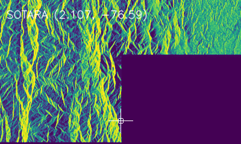
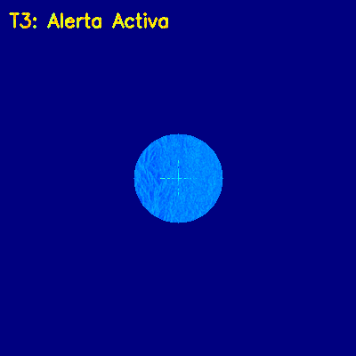
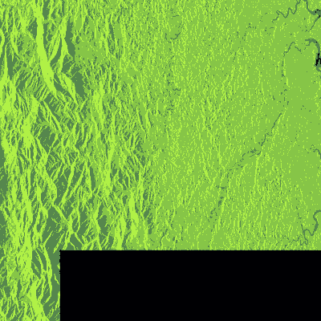

Resumen de Operaciones
Samanga Baja, Popayán, Cauca




Satélite Sentinel-1 (Radar SAR)
Usa microondas para "sentir" la textura del terreno. Diferencia: Atraviesa nubes y humo volcánico. Lo que ves son rugosidades y pendientes. Ideal para detectar deformaciones milimétricas en el cono volcánico.
Google Maps / Sentinel-2 (Óptico)
Usa luz visible (como una foto normal). Diferencia: Muestra colores reales (azufre, rocas, nieve). Bloqueado por nubes. Es mejor para identificar depósitos de ceniza superficiales y coladas de lava recientes.
DIF. VERTICAL (InSAR)
HUMEDAD SUELO
NIVEL RÍO CAUCA
RIESGO VOLCÁNICO
ESTADO DE NACIENTES
85% Caudal Histórico
-
Segmentación IA Completada
K-means clustering detectó 4 clases texturales en el cráter del Puracé.
Hace 5 min -
Cambio Multitemporal Detectado
Diferencia de señal radar observada entre el 10 y 16 de marzo.
Hace 15 min -
Archivo Histórico Consolidado
20 adquisiciones Sentinel-1 SLC listas para análisis Fase 2.
Hace 30 min
Advanced InSAR Monitoring (Sentinel-1A vs 1C)
Surface deformation baseline: March 10, 2026 - March 16, 2026. Fringes represent relative phase shifts at 20m resolution.